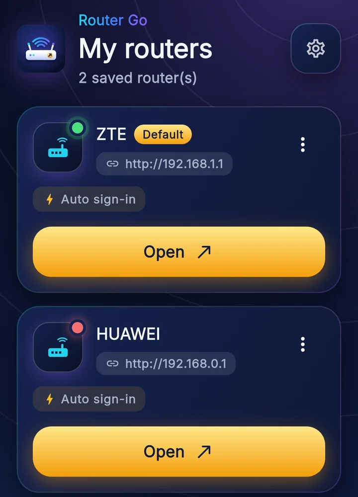

نسخة أندرويد
APK
- الإصدار
- 0.7.4
- الملف
- router-go.apk
- القفل
- PIN أو البصمة
- نزّل ملف الـ APK على الموبايل.
- اسمح بالتثبيت من مصادر غير معروفة لو طلب منك.
- افتح الملف واضغط تثبيت.
احفظ راوتراتك مرة واحدة وادخل على صفحة الإعدادات في ثانية، من الموبايل أو الكمبيوتر، من غير ما تكتب العنوان كل مرة.
أندرويد وويندوز · من غير إعلانات ولا حساب ولا تتبّع

التحميل
نسختان: واحدة لأندرويد وواحدة لويندوز. نفس الإمكانيات ونفس الشكل.
APK
EXE
المميزات
كل حاجة بتعملها كل مرة بتتعمل لك أوتوماتيك.
زر واحد يفتح صفحة الراوتر جوه التطبيق ويملأ اسم المستخدم وكلمة المرور المحفوظين. بيملأ مرة واحدة بس في كل محاولة، فكلمة سر غلط عمرها ما تقفل الراوتر عليك.
على أندرويد: افتح الراوتر أو اختبر السرعة من غير ما تفتح التطبيق.
راوتر البيت والشغل، مع واحد افتراضي، وحالة الاتصال تظهر على كل كارت.
احفظ صفحة جوه إعدادات الراوتر وافتحها بعدين بضغطة، حتى لو بتحتاج تدوس على قوائم.
مواقع طرف ثالث بتفتح جوه التطبيق.
سجّل أجهزتك (الاسم، MAC، IP). اكتب الـ MAC من غير نقطتين والتطبيق يرتبه، وثبّت جهاز فوق صفحة الراوتر، وزر التعبئة يكتبه في نموذج إضافة جهاز من غير ما يدوس حفظ.
قفل بـ PIN أو بصمة أو Windows Hello. وصدّر بياناتك لملف محمي بكلمة مرور وارجع استوردها وقت ما تحب.
إزاي يشتغل
من أول تثبيت لحد ما تفتح الراوتر بدون ما تكتب أي عنوان.
اكتب الاسم والعنوان واليوزر والباسورد مرة واحدة، أو خلّي التطبيق يكتشف عنوان الراوتر لوحده.
صفحة الإعدادات تفتح جوه التطبيق، وتقدر تخلّيها تفتح أول ما التطبيق يشتغل.
اتنقل بين صفحاتك المفضلة، واعمل اختبار سرعة، وثبّت الأجهزة اللي بتحتاجها قدامك.
الخصوصية
التطبيق اختصار لراوترك أنت، مش أداة اختراق. وبرضه: غيّر كلمة مرور الراوتر الافتراضية.
اقرأ سياسة الخصوصية كاملةأسئلة
لأ. هو اختصار بيفتح صفحة الراوتر بتاعك وبيدخل بالبيانات اللي إنت حفظتها، ومابيعملش أي فحص للشبكة.
على جهازك بس، مشفّر. مابيتبعتش لأي سيرفر. لو صدّرت ملف نسخة احتياطية، احميه بكلمة مرور واحفظه في مكان آمن.
لأن الملف بيتنزل من الموقع مباشرة مش من متجر. اسمح بالتثبيت للمتصفح اللي نزّلت منه، وبعد التثبيت تقدر ترجّع الإعداد زي ما كان.
الدخول التلقائي بيحتاج WebView2 Runtime، وغالبًا موجود في ويندوز 10 و11. لو مش موجود التطبيق بيعرض عليك تفتح الراوتر في المتصفح.